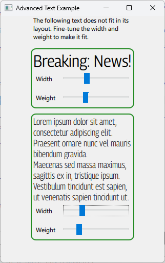
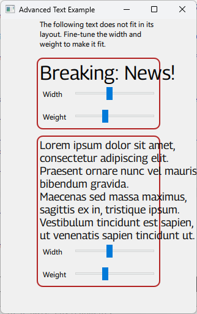

Advanced Text Example
A Qt Quick example demonstrating some advanced features of text.

Traditionally, font families have been distributed in a limited number of variations: a set of hardcoded weights, styles and widths (and combinations of these) that can be selected as standalone fonts.
Variable fonts expands on this idea. Instead of distributing the variations of the font family as stand-alone font files, a single variable font can produce the variations (and many more) through interpolation.
This is achieved by defining so-called "variable axes" in the font for properties such as width, slant or weight. The user may select from preset values along these axes or set any custom value in the range the font supports.
This example includes a variable font called "Georama" (Copyright 2020 The Georama Project Authors, Licensed under OFL 1.1). It has two variable axes: One for weight and one for width. By manipulating either of these, the user can create a wide range of variations over the font design.
The example illustrates how this may be used in a real world scenario: When starting the example, the text snippets stretch outside the bounding boxes defined in the strict layout.

By tweaking the width and/or weight, the visual designer can get variations of the font which fit the layout exactly without having to change the font size.
The example assigns sliders to each of the two variable axes in the font. It then binds the variable axis values to the sliders so that the font updates automatically when the user changes them.
font.variableAxes: {
"wdth": widthSlider.value,
"wght": weightSlider.value
}
The variable axes are addressed by their four-character tag. Some tags, such as "wdth" and "wght", are mapped to specific font attributes by convention (in this case: "width" and "weight", respectively.) But the font may support any axis as long as it is denoted by a four-character tag. Information about the axes the font supports will often be included in its file name.
Running the Example
To run the example from Qt Creator, open the Welcome mode and select the example from Examples. For more information, see Qt Creator: Tutorial: Build and run.